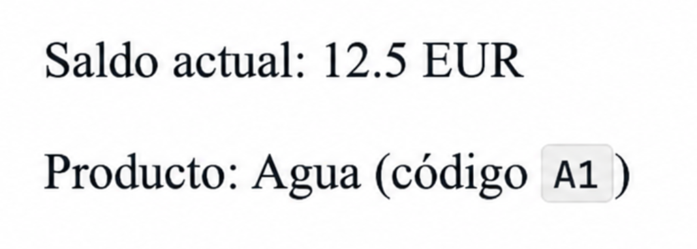
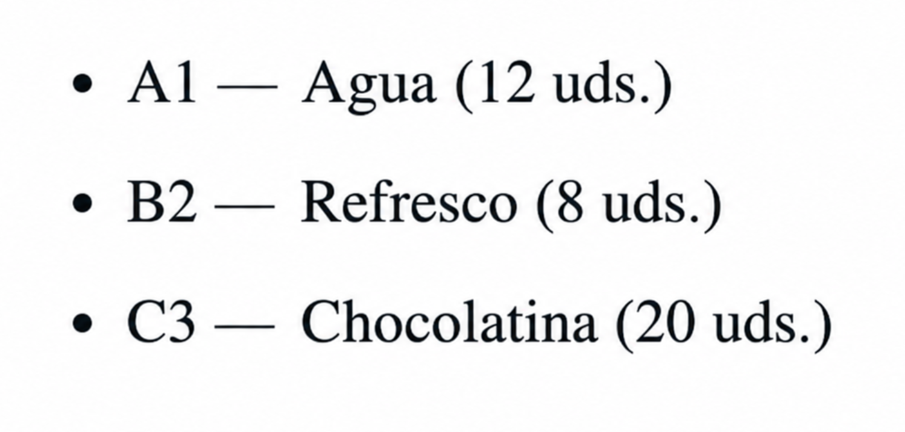
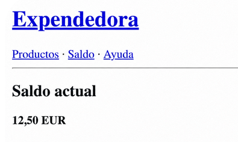

PLANTILLAS JINJA2 EN FLASK¶
Estos apuntes acompañan al lab a4 de UT4. Asumen que ya has hecho los labs a1, a2 y a3.
El problema que resuelven las plantillas¶
Hasta ahora, cada route devolvía la respuesta como un string de Python. A veces era texto plano de una línea (f"Saldo actual: {…} EUR", f"No hay coincidencias para '{texto}'.") y a veces HTML con etiquetas (<h1>, <ul>, <li>...). Flask sirve todo como text/html, así que el navegador lo interpreta como una página en ambos casos — un texto suelto como "Hola" también es un documento HTML válido, simplemente sin formato.
Mientras las respuestas eran de una línea, esto funcionaba. El problema aparece en cuanto la página crece y hay que mezclar texto, etiquetas y datos en el mismo string:
No todas las respuestas que hemos visto son tan complejas
La mayoría de los routes que hemos usado en labs anteriores (/saldo, /insertar, los mensajes de error) devolvían una sola línea sin etiquetas. Pero cualquier string que devuelva un route Flask lo sirve como HTML, así que el navegador lo trata igual. Lo engorroso de "construir HTML a mano" no se ve al devolver una frase corta — se nota cuando la página tiene un título, una lista, formatos y enlaces, todo concatenado en el mismo string como el ejemplo de arriba.
Aspectos incómodos de ese código:
- El editor en el que estamos desarrollando la aplicación no resalta el HTML porque aparece dentro de un string. Cualquier error de sintaxis (
<ulsin cerrar, comillas sueltas) pasa desapercibido. - Los datos están acoplados al HTML:
t[0],t[1],t[3]no permiten saber directamente de qué dato estamos mostrando. - Si mañana un diseñador quiere cambiar la tabla a una lista, tiene que tocar Python.
- Si la página crece a 80 líneas de HTML, el route se vuelve ilegible.
La solución es separar la estructura HTML de los datos: el HTML va a un fichero .html con huecos, y el route solo se encarga de obtener los datos y rellenar esos huecos. A esos ficheros con huecos los llamamos plantillas (en inglés, templates — verás este término en la documentación de Flask y en el nombre de la función render_template).
La separación que ya conoces
Es la misma idea que llevamos aplicando en todo el proyecto con la arquitectura por capas: cada cosa en su sitio. El servicio no sabe de HTTP; el route no sabe de SQLite; la plantilla no sabe de Python — solo recibe datos y los muestra.
Jinja2 y render_template¶
Jinja2 es el motor de plantillas que viene incluido con Flask (no hay que instalarlo aparte). Permite escribir HTML normal con tres añadidos: {{ ... }} para inyectar valores, {% ... %} para estructuras de control (for, if, herencia), y filtros con | para transformar valores antes de imprimirlos.
render_template es la función de Flask que carga una plantilla, la rellena con los datos que le pases y devuelve el HTML resultante listo para enviar al navegador.
Lo que hace Flask al ejecutar render_template('saldo.html', saldo=12.50):
- Busca el fichero
saldo.htmlen la carpetatemplates/. - Lo lee.
- Sustituye las marcas Jinja2 (
{{ saldo }},{% if %}, etc.) por su valor real. - Devuelve el HTML resultante como string.
Dónde busca Flask las plantillas¶
Flask espera encontrar las plantillas en una carpeta llamada exactamente templates/ (en plural, en minúsculas) que cuelga del paquete donde vive app.py. En el proyecto de la expendedora:
Si Flask no encuentra tu plantilla
El error jinja2.exceptions.TemplateNotFound: productos.html aparece cuando Flask no localiza el fichero. Causa más típica: la carpeta no se llama templates/ (en plural y minúsculas) o no cuelga del paquete presentation/. No hay configuración mágica que cambiar — solo seguir las convenciones en cuanto al nombre y la ubicación.
Sintaxis de Jinja2¶
Una plantilla Jinja2 es HTML normal con tres añadidos que no existen en HTML puro: una forma de imprimir valores que vienen del route, una forma de escribir estructuras de control (for, if) dentro del HTML, y una forma de transformar valores justo antes de imprimirlos.
Inyectar valores: {{ variable }}¶
Las dobles llaves imprimen el valor de una variable o expresión:
<p>Saldo actual: {{ saldo }} EUR</p>
<p>Producto: {{ producto.nombre }} (código <code>{{ producto.codigo }}</code>)</p>
Las variables vienen de los argumentos que pasas a render_template. Si el route hace:
dentro de la plantilla existen las variables saldo (con valor 12.5) y producto (con el diccionario que le hayas pasado). Puedes pasar tantos argumentos con nombre como variables necesite la plantilla.
Con ese saldo=12.5 y un mi_dict = {'codigo': 'A1', 'nombre': 'Agua'}, el HTML que Jinja2 genera y envía al navegador es:

Cada {{ ... }} se sustituye por el valor de la variable; el resto del HTML pasa intacto.
El valor sale tal cual lo entregue el route
Con {{ saldo }} se imprime el número como Python lo represente: si saldo vale 12.5, la plantilla muestra literalmente 12.5 EUR — sin los dos decimales que esperaríamos en un precio y con el punto decimal de Python en lugar de la coma decimal que usamos en español. Para controlar el formato (decimales, separador, signo de moneda) necesitamos un filtro, que veremos al final de esta sección.
Iterar: {% for %} ... {% endfor %}¶
Recorre una lista, igual que un for de Python pero escrito con {% %}. Siempre se cierra con {% endfor %} — las plantillas no usan indentación como Python para delimitar bloques, así que cada apertura necesita su cierre explícito.
<ul>
{% for p in productos %}
<li>{{ p.codigo }} — {{ p.nombre }} ({{ p.cantidad }} uds.)</li>
{% endfor %}
</ul>
Si el route pasa productos=[{...A1...}, {...B2...}, {...C3...}], el HTML que Jinja2 genera y envía al navegador es:
<ul>
<li>A1 — Agua (12 uds.)</li>
<li>B2 — Refresco (8 uds.)</li>
<li>C3 — Chocolatina (20 uds.)</li>
</ul>

Cada vuelta del {% for %} reemplaza la línea con {{ p.codigo }}, {{ p.nombre }} y {{ p.cantidad }} por los valores del producto correspondiente. Las marcas {% for %} y {% endfor %} desaparecen del HTML final — son instrucciones para Jinja2, no etiquetas que el navegador deba ver.
Condicionar: {% if %} ... {% else %} ... {% endif %}¶
Funciona como un if de Python pero escrito con {% %} y cerrado con {% endif %}. Un ejemplo mínimo: mostrar un mensaje distinto según haya o no saldo insertado en la máquina:
{% if saldo %}
<p>Tienes {{ saldo }} EUR insertados.</p>
{% else %}
<p>Inserta dinero para comprar.</p>
{% endif %}
Si el route pasa saldo=2.5, llega al navegador <p>Tienes 2.5 EUR insertados.</p>. Si pasa saldo=0 (o no pasa nada), llega <p>Inserta dinero para comprar.</p>.
Las condiciones se evalúan como en Python: una lista vacía, None, 0 o "" son falsos; el resto, verdaderos. Por eso {% if saldo %} ya cubre el caso "no hay saldo" sin tener que escribir saldo > 0, igual que {% if productos %} ya cubre "lista vacía" sin necesitar len(productos) > 0.
{% if %} y {% for %} se pueden anidar, como cualquier estructura de control. El patrón típico es decidir qué mostrar según haya elementos en la lista y, si los hay, recorrerlos:
{% if productos %}
<ul>
{% for p in productos %}
<li>{{ p.nombre }}</li>
{% endfor %}
</ul>
{% else %}
<p>No hay productos.</p>
{% endif %}
Si productos viene vacío, el navegador recibe <p>No hay productos.</p>; si trae elementos, recibe el <ul> con un <li> por producto. Las marcas Jinja2 desaparecen, como siempre.
Filtros: el operador |¶
Un filtro transforma un valor antes de imprimirlo. Se aplica con la barra vertical |, leyéndose de izquierda a derecha: el valor de la izquierda pasa al filtro de la derecha.
Si producto.precio_final vale 1.5, el HTML que se envía al navegador es:
El filtro |format con la máscara "%.2f" ha forzado los dos decimales (1.5 → 1.50). Compáralo con {{ producto.precio_final }} sin filtro, que habría imprimido 1.5.
El filtro format aplica una cadena de formato estilo printf al valor de la derecha. Es el equivalente Jinja2 al f-string que ya usabas en routes y en print:
| Donde | Sintaxis |
|---|---|
| Python (f-string) | f"{precio:.2f}" |
Python (.format) |
"{:.2f}".format(precio) |
| Jinja2 (filtro) | {{ "%.2f"|format(precio) }} |
El filtro no cambia el punto decimal por coma
|format("%.2f") controla cuántos decimales se imprimen, pero mantiene el punto decimal de Python: 12.5 → 12.50, nunca 12,50. Para mostrar la coma del español hay que encadenar otro filtro detrás:
producto.precio_final = 1.5 el HTML final es <p>Precio: 1,50 EUR</p>. El filtro |replace(".", ",") recibe el "1.50" que sale de |format y sustituye el punto por la coma justo antes de imprimir. Para aplicaciones más serias existe la librería flask-babel, que respeta el idioma del navegador, pero queda fuera del alcance de la unidad.

Volviendo al ejemplo del saldo con el que abrimos la sección: si en lugar de {{ saldo }} escribimos {{ "%.2f"|format(saldo)|replace(".", ",") }}, con saldo=12.5 la plantilla ya no muestra 12.5 EUR sino 12,50 EUR — el formato de precio que esperaríamos en español.
Del formateo de presentación (decimales, mayúsculas, fechas) se encarga la plantilla, no el route. El route entrega el valor crudo; la plantilla decide cómo se ve. Esa es justamente la separación que vinimos a buscar.
Conceptos clave de la sintaxis
{{ ... }}imprime un valor.{% ... %}ejecuta una estructura de control (for,if,extends,block).{% block nombre %} ... {% endblock %}define un hueco con nombre dentro de una plantilla padre que las plantillas hijas podrán rellenar (lo veremos en la sección de herencia). Aparece en parejas: unabase.htmldeclara los bloques (vacíos o con valor por defecto) y las hijas los redefinen con su contenido propio.- Cada bloque (
for,if,block) se cierra con su{% end... %}correspondiente. - Los filtros (
|format,|upper,|length, ...) transforman el valor antes de imprimirlo.
Herencia de plantillas¶
El problema: páginas que comparten cabecera¶
Cada página de la expendedora necesita la misma cabecera (<!doctype html>, navegación, <title>...). Copiarla en cada fichero significa que cualquier cambio (un menú nuevo, un logo) implica tocar todas las plantillas. Lo mismo que copiar código entre clases en POO.
{% extends %} y {% block %}¶
Jinja2 resuelve esto con la herencia de plantillas. Defines una plantilla padre (típicamente base.html) con el esqueleto común y unos huecos llamados bloques:
<!doctype html>
<html lang="es">
<head>
<meta charset="utf-8">
<title>{% block titulo %}Expendedora{% endblock %}</title>
</head>
<body>
<header>
<h1><a href="{{ url_for('inicio') }}">Expendedora</a></h1>
<nav>
<a href="{{ url_for('listar_productos') }}">Productos</a> ·
<a href="{{ url_for('saldo') }}">Saldo</a> ·
<a href="{{ url_for('ayuda') }}">Ayuda</a>
</nav>
<hr>
</header>
<main>
{% block contenido %}{% endblock %}
</main>
</body>
</html>
Fíjate en que hay dos formas de declarar un bloque en el padre:
- Con valor por defecto:
{% block titulo %}Expendedora{% endblock %}. Si la plantilla hija no sobrescribe este bloque, el título seguirá siendoExpendedora. Sirve para poner un contenido razonable que valga "por defecto" para cualquier página. - Vacío:
{% block contenido %}{% endblock %}. Si la hija no lo rellena, ese hueco quedará en blanco en el HTML final. Se usa cuando no tiene sentido un valor por defecto y cada página debe aportar el suyo (el cuerpo de la página, por ejemplo).
Ambas formas son válidas y mezclables en la misma plantilla padre, como hacemos aquí.
Cada plantilla hija es un fichero .html muy corto: declara que extiende del padre y rellena los bloques con su propio contenido. Por ejemplo, el fichero saldo.html que renderizamos desde el route /saldo:
{% extends "base.html" %}
{% block titulo %}Saldo — Expendedora{% endblock %}
{% block contenido %}
<h2>Saldo actual</h2>
<p><strong>{{ "%.2f"|format(saldo)|replace(".", ",") }} EUR</strong></p>
{% endblock %}
Vamos línea a línea:
-
{% extends "base.html" %}— debe ser la primera línea. Le dice a Jinja2: "no soy una página completa, soy un trozo que rellena los huecos debase.html". Una consecuencia importante: una vez extiendes de otra plantilla, solo el contenido de los bloques entra en el HTML final. Cualquier cosa que escribas fuera de un{% block %}se ignora silenciosamente. Por ejemplo:{% extends "base.html" %} <p>Este párrafo NO aparece en la página.</p> {% block contenido %} <p>Este sí aparece, porque está dentro de un block.</p> {% endblock %}El
<p>de fuera no produce error, simplemente no llega al navegador, porque lo que hace la plantilla padre es rellenar los bloques que contiene con los datos que le pasa la plantilla hija. -{% block titulo %}Saldo — Expendedora{% endblock %}— sobrescribe el bloquetituloquebase.htmlhabía declarado vacío (con{% block titulo %}Expendedora{% endblock %}). Al combinarse, el<title>final del HTML contendrá"Saldo — Expendedora"en vez del valor por defecto (Expendedora). -{% block contenido %}...{% endblock %}— rellena el bloquecontenidoque enbase.htmlestaba vacío ({% block contenido %}{% endblock %}). Aquí va el cuerpo específico de esta página: un<h2>y un<p>con el saldo formateado a dos decimales.
Lo que la hija no escribe lo hereda intacto: el <!doctype>, el <head>, la cabecera con navegación, el <main>. Solo rellena los huecos titulo y contenido.
Cuando el route ejecuta render_template('saldo.html', saldo=12.5), Jinja2 fusiona base.html con saldo.html y envía al navegador este HTML completo:
<!doctype html>
<html lang="es">
<head>
<meta charset="utf-8">
<title>Saldo — Expendedora</title>
</head>
<body>
<header>
<h1><a href="/">Expendedora</a></h1>
<nav>
<a href="/productos">Productos</a> ·
<a href="/saldo">Saldo</a> ·
<a href="/ayuda">Ayuda</a>
</nav>
<hr>
</header>
<main>
<h2>Saldo actual</h2>
<p><strong>12,50 EUR</strong></p>
</main>
</body>
</html>
Fíjate en tres detalles del resultado:
- El
<title>es"Saldo — Expendedora", no"Expendedora": la hija ha sobrescrito el valor por defecto del padre. - El
<main>ya no contiene{% block contenido %}{% endblock %}sino el<h2>y el<p>que la hija puso dentro de ese bloque. - Las marcas Jinja2 desaparecen. El navegador no recibe ningún
{% %}ni{{ }}: son instrucciones para el motor de plantillas, no HTML que el navegador deba interpretar. Lo mismo que pasaba con{% for %}en la sección anterior.

Relación con POO
La idea es la misma que cuando una clase hija extiende a una padre y sobrescribe métodos: la clase padre define la estructura (los métodos comunes), la hija solo redefine lo que cambia. Aquí base.html es la "clase padre", cada bloque es un "método sobrescribible", y la hija lo redefine con su contenido propio.
Si una página pierde la cabecera común
Probablemente has olvidado la primera línea de la plantilla hija: {% extends "base.html" %}. Sin ella, la plantilla es un fichero suelto y no hereda nada.
Conversión tupla → dict en el route¶
El servicio del proyecto devuelve tuplas: listar_productos(), obtener_producto(codigo) y buscar_producto(texto) entregan tuplas con seis campos en este orden:
En una plantilla, escribir {{ producto[0] }} y {{ producto[3] }} es ilegible: hay que contar campos a mano para entender qué se está mostrando. Por eso, antes de pasar los datos a la plantilla, los convertimos a diccionarios:
zip(keys, t) empareja cada nombre con su valor — ('codigo', 'A1'), ('nombre', 'Agua')... — y dict(...) lo convierte en un diccionario. La comprensión de lista hace lo mismo para cada tupla. Resultado: una lista de diccionarios con claves nombradas.
Ahora la plantilla puede escribir lo legible:
<td><code>{{ p.codigo }}</code></td>
<td>{{ p.nombre }}</td>
<td>{{ "%.2f"|format(p.precio_final)|replace(".", ",") }} EUR</td>
En Jinja2,
p.codigoyp['codigo']son equivalentes para diccionarios. Se prefiere la notación con punto porque se lee mejor.
¿Por qué la conversión vive en el route y no en el servicio?
El servicio devuelve tuplas porque viene del dominio, donde la estructura es estable, compacta y suficiente. La conversión a diccionario es adaptación a la presentación: solo la necesita la plantilla para ser legible. Por eso vive en el route (capa de presentación), no en el servicio (capa de aplicación). Si mañana añades un cliente CLI o un endpoint JSON, no tienen por qué pasar por la conversión.
url_for en plantillas¶
url_for es una función de Flask que genera la URL de un route a partir del nombre de su función Python. Es decir, si en app.py tienes:
entonces url_for('ver_producto', codigo='A1') devuelve la cadena /producto/A1. Lo importante es que el primer argumento es el nombre de la función Python (ver_producto), no el patrón del decorador (/producto/<codigo>). En plantillas se usa igual:
<a href="{{ url_for('inicio') }}">Inicio</a>
<a href="{{ url_for('ver_producto', codigo=p.codigo) }}">Detalle</a>
<a href="{{ url_for('reponer', codigo=p.codigo, unidades=5) }}">Reponer 5 unidades</a>
Para el código anterior en jinja, si la plantilla se renderiza dentro de un {% for p in productos %} y p.codigo vale 'A1', el HTML que llega al navegador es:
<a href="/">Inicio</a>
<a href="/producto/A1">Detalle</a>
<a href="/reponer/A1/5">Reponer 5 unidades</a>
Cada {{ url_for(...) }} se ha sustituido por la URL real construida a partir del patrón del decorador @app.route(...) y los argumentos que le pasamos. Los argumentos con nombre (codigo=p.codigo, unidades=5) rellenan los huecos <codigo> y <unidades> del patrón.
¿Por qué no escribir directamente "/producto/A1"? Porque si mañana cambias el patrón de la URL (por ejemplo /producto/<codigo> por /item/<codigo> o /v2/producto/<codigo>), todos los enlaces hechos con url_for se actualizan solos. Los strings hardcodeados se romperían y tendrías que buscarlos uno a uno por todas las plantillas.
| Forma | Riesgo |
|---|---|
<a href="/producto/{{ p.codigo }}"> |
Si renombras la URL del route, se rompe sin avisar. |
<a href="{{ url_for('ver_producto', codigo=p.codigo) }}"> |
Si renombras la URL del route, se actualiza solo. |
Malas prácticas¶
Mala práctica: lógica de negocio dentro de la plantilla
La plantilla pinta, no decide. No debemos incluir cálculos, validaciones ni reglas de negocio.
<!-- Incorrecto: la plantilla aplica el descuento -->
<td>{{ "%.2f"|format(p.precio_base * (1 - p.descuento / 100))|replace(".", ",") }} EUR</td>
<!-- Correcto: el dominio ya entrega el precio_final calculado -->
<td>{{ "%.2f"|format(p.precio_final)|replace(".", ",") }} EUR</td>
Si la lógica se incluye en la plantilla, no se pueden hacer tests, no se podría tampoco reutilizar desde otra interfaz (CLI, API JSON) y se mezcla con el HTML.
Mala práctica: consultas a la base de datos desde la plantilla
La plantilla no llama al servicio ni al repositorio. Recibe los datos ya preparados por el route.
<!-- Incorrecto: la plantilla consulta -->
{% for p in servicio.listar_productos() %}
<li>{{ p[1] }}</li>
{% endfor %}
## Correcto: el route obtiene los datos y se los pasa a la plantilla
@app.route('/productos')
def listar_productos():
keys = ['codigo', 'nombre', 'precio_base', 'precio_final', 'cantidad', 'descuento']
productos = [dict(zip(keys, t)) for t in servicio.listar_productos()]
return render_template('productos.html', productos=productos)
Cada capa hace su trabajo: el servicio entrega los datos, el route los adapta, la plantilla los pinta. La frontera es estricta: si la plantilla necesita un dato, lo pide como variable, no lo va a buscar ella.
Regla mental rápida
Si en una plantilla ves un paréntesis con argumentos llamando a algo del dominio (como servicio.algo()), es señal de que la lógica está en el sitio equivocado. Las únicas funciones que se llaman desde la plantilla son las utilidades de Jinja2/Flask (url_for, filtros como |format, |length).